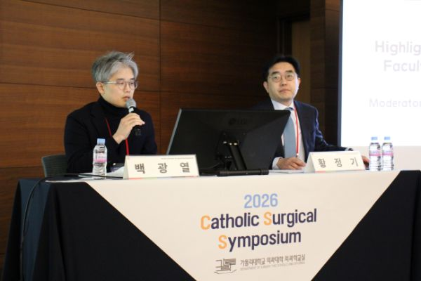
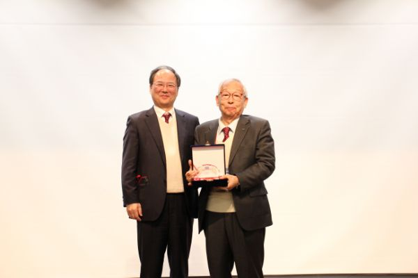
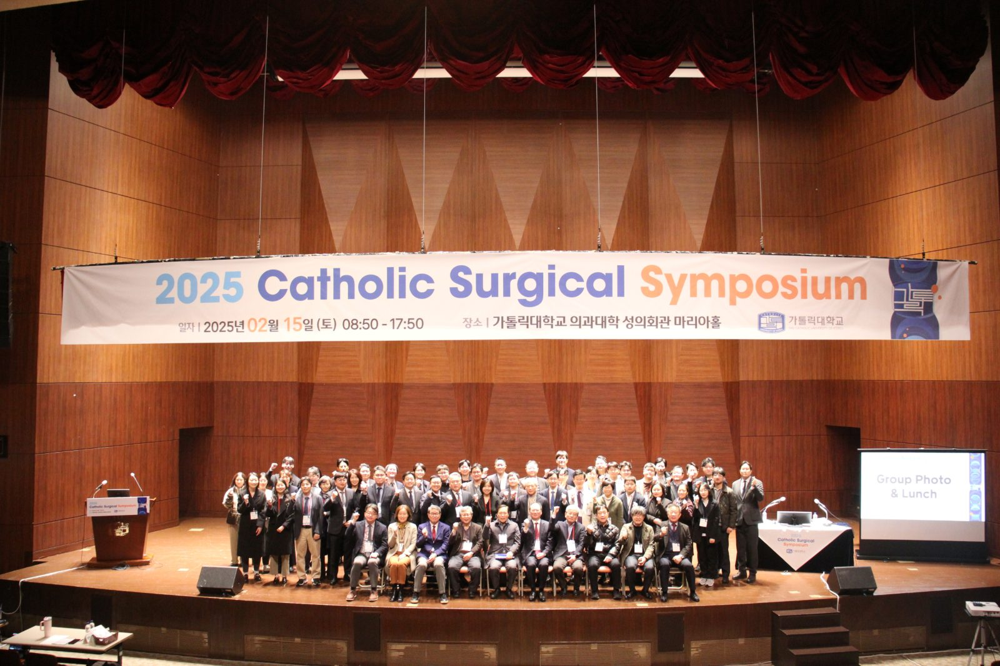
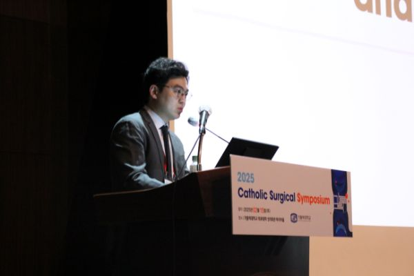
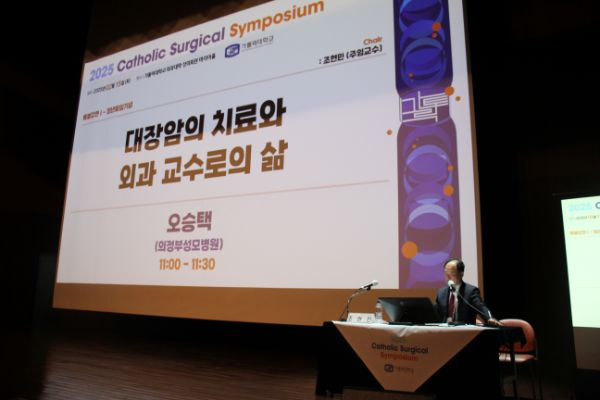
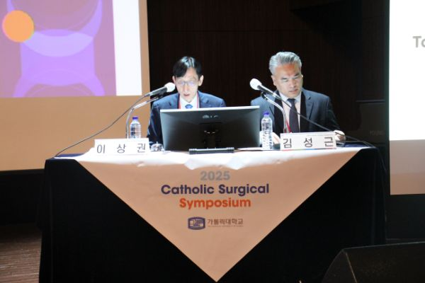

행사
외과학교실은 Catholic Surgical Symposium(CSS)을 열어 외과의사가 임상에서 자주 만나는 상황의 기본 지식, 주요 수술의 최신 지견, 교실 교수진의 연구 성과를 함께 나눕니다.
바로 가기: 예정된 행사 · 2026 CSS · 2025 CSS
예정된 행사
- 2027 Catholic Surgical Symposium: 날짜와 장소가 정해지면 이곳에 안내합니다.
- 신년하례식, 송년회 같은 동문회 행사는 외과동문회 홈페이지에서 안내합니다.
2026 Catholic Surgical Symposium
- 일시
- 2026년 2월 21일(토)
- 장소
- 서울성모병원 지하1층 대강당
- 프로그램
- Symposium I: The Next Chapter: Key Surgical Practices and Young Surgeons Across CMC
- 특별강연 I: 초고령화 사회에서 외과의 미래를 준비하며 (박병태, 가톨릭대학교 보건의료경영대학원)
- Plenary Session: Highlighting of Key Research by Faculty Members of This Year
- Symposium II: Surgical Critical Care: Principles, Practice, and Current Evidence
- 특별강연 II: I’m A Surgeon, 수술실 40년 그리고 그 이후 (문인성, 가톨릭의대 명예교수)
- Video Session: The Most Interesting and Challenging Cases of the Year
- 시상식: 우수논문상, 우수비디오상


 개회사 (조현민 주임교수)
개회사 (조현민 주임교수) Symposium I (좌장 이인규·김상동)
Symposium I (좌장 이인규·김상동) Symposium I 발표
Symposium I 발표 휴식 시간
휴식 시간 특별강연 I: 초고령화 사회에서 외과의 미래를 준비하며
특별강연 I: 초고령화 사회에서 외과의 미래를 준비하며
Plenary Session (좌장 백광열·황정기) Symposium II (좌장 김기환·선우영)
Symposium II (좌장 김기환·선우영) 특별강연 II: I’m a Surgeon (문인성 명예교수)
특별강연 II: I’m a Surgeon (문인성 명예교수)
특별강연 II 시상식 (우수논문상·우수비디오상)
시상식 (우수논문상·우수비디오상) 축사 (전병무 동문회장)
축사 (전병무 동문회장) 강연장
강연장


2025 Catholic Surgical Symposium
- 일시
- 2025년 2월 15일(토)
- 장소
- 가톨릭대학교 의과대학 성의회관 1층 마리아홀
- 프로그램
- Symposium I: Rediscovery of Fundamental Knowledge in Critical Surgical Conditions
- 특별강연 I (정년퇴임 기념): 대장암의 치료와 외과 교수로의 삶 (오승택, 의정부성모병원)
- Plenary Session: Top Research Publications by Faculty This Year
- Symposium II: Paradigm Shift and Cutting Edge of Major Surgical Disease
- 특별강연 II (정년퇴임 기념): Gastrointestinal Surgery: Arena (진형민, 성빈센트병원)
- Video Session: Most Interesting and Challenging Cases of the Year
- 시상식: 우수논문상, 우수비디오상


 개회사 (조현민 주임교수)
개회사 (조현민 주임교수) Symposium I (좌장 박순철·나건형)
Symposium I (좌장 박순철·나건형)
Symposium I 발표 휴식 시간
휴식 시간
특별강연 I 정년퇴임 기념: 대장암의 치료와 외과 교수로의 삶 (오승택 교수) 특별강연 I 정년퇴임 기념
특별강연 I 정년퇴임 기념
Plenary Session (좌장 이상권·김성근) Symposium II (좌장 백종민·김상동)
Symposium II (좌장 백종민·김상동) 특별강연 II 정년퇴임 기념
특별강연 II 정년퇴임 기념 특별강연 II 정년퇴임 기념
특별강연 II 정년퇴임 기념 Video Session (좌장 김진조·계봉현)
Video Session (좌장 김진조·계봉현) 시상식 (우수논문상·우수비디오상)
시상식 (우수논문상·우수비디오상)